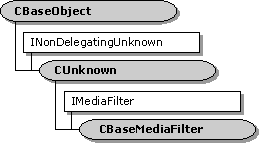

description: The CBaseMediaFilter class implements the IMediaFilter interface. ms.assetid: 45c8973b-d0b3-4aeb-96e7-be47f8d7f4a7 title: CBaseMediaFilter class (Amfilter.h) ms.topic: reference ms.date: 4/26/2023 topic_type:
[The feature associated with this page, DirectShow, is a legacy feature. It has been superseded by MediaPlayer, IMFMediaEngine, and Audio/Video Capture in Media Foundation. Those features have been optimized for Windows 10 and Windows 11. Microsoft strongly recommends that new code use MediaPlayer, IMFMediaEngine and Audio/Video Capture in Media Foundation instead of DirectShow, when possible. Microsoft suggests that existing code that uses the legacy APIs be rewritten to use the new APIs if possible.]

The CBaseMediaFilter class implements the IMediaFilter interface. Use this class for plug-in distributors or other objects that need to support IMediaFilter without supporting the IBaseFilter interface. Do not use this class for filters. Instead, use the CBaseFilter class, or a base class derived from CBaseFilter.
| Protected Member Variables | Description |
|---|---|
| m_State | Current state of the object. |
| m_pClock | Pointer to the object's reference clock. |
| m_tStart | Reference time that corresponds to stream time 0. |
| m_clsid | Class identifier (CLSID) of the object. |
| m_pLock | Pointer to a critical section. |
| Public Methods | Description |
| CBaseMediaFilter | Constructor method. |
| **~ CBaseMediaFilter** | Destructor method. Virtual. |
| StreamTime | Retrieves the current stream time. Virtual. |
| IsActive | Determines whether the object is active (running or paused). |
| IPersist Methods | Description |
| GetClassID | Retrieves the class identifier. |
| IMediaFilter Methods | Description |
| GetState | Retrieves the object's state (running, stopped, or paused). |
| SetSyncSource | Sets a reference clock for the object. |
| GetSyncSource | Retrieves the reference clock that the object is using. |
| Stop | Stops the object. |
| Pause | Pauses the object. |
| Run | Runs the object. |
| Requirement | Value |
|---|---|
| Header | Amfilter.h (include Streams.h) |
| Library | Strmbase.lib (retail builds); Strmbasd.lib (debug builds) |